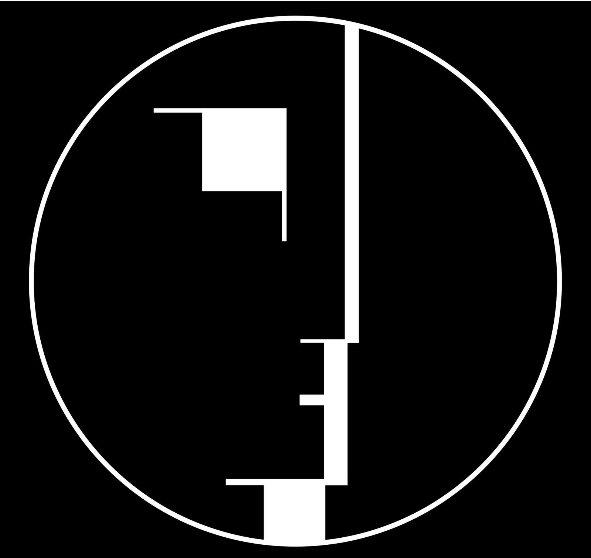

References / Other / 08
Bauhaus signet
Oskar Schlemmer’s profile of a head, built only from rectangles and bars inside a circle, became the school’s mark from 1922.
- Source
- Wikimedia Commons: Bauhaus-Signet.svg
- Creator
- Oskar Schlemmer
- Made
- 1922
- Style
- Bauhaus (agent-proposed, not yet reviewed by a person)
- Moods
- Constructive, geometric, austere
- Evidence
- Downloaded and inspected the PNG rendering of the Commons vector file. The file is a modern vector redrawing of the signet, not a scan of a 1922 print.
- Reviewed
- Rights
- Open license, stored. License: public domain. Rights policy

Context
Commons describes the file as the signet of the Staatliches Bauhaus, designed by Oskar Schlemmer and used from 1922, and cites Hans M. Wingler, Bauhaus: Weimar, Dessau, Berlin, Chicago (MIT Press, 1969). Commons.
The 1923 exhibition competition required the signet, and Joost Schmidt’s poster includes it. Bauhaus Kooperation. See the poster.
Observed
- A thin white circle frames a black disc on a black square.
- A long vertical white bar divides the disc slightly right of center.
- White rectangles and thin bars at left of the bar suggest an eye, a nose, a mouth, and a neck in profile.
- All parts except the circle are horizontal or vertical; there are no diagonals or curves inside the face.
Why it belongs
The signet shows the Bauhaus idea of the human figure as a constructed system. It is the reverse of an ornamental emblem: the face is only a set of blocks.
Because it uses only black and white, it shows that the style depends on elementary shapes as much as on primary color.
Borrow
Draw an icon or figure only from rectangles and one enclosing circle.
Use one strong vertical bar as the axis of a mark.
Measured
Machine-extracted by tools/image-traits.py on . Full measurement.
- Mean chroma
- 0
- Palette
- #000000 90%
- #ffffff 7%
- #959595 1%
- #acacac 0%
- #dddddd 0%
- #454545 0%
- #0e0e0e 0%
- #c6c6c6 0%

